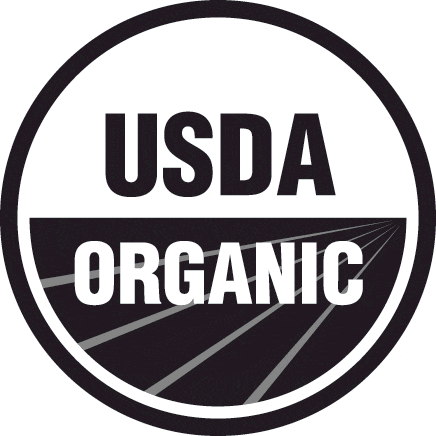

own the only usda-certified
juice bar franchise
Clean Juice is in a league of its own. Other juice bar franchises are out there, but only Clean Juice can claim USDA-certified organic status. Clean Juice is truly a nutrition and wellness franchise, not just a juice bar. Our products are the purest on earth containing no added sugars, no harmful pesticides, and no antibiotics. Clean Juice is a unique franchise opportunity with limitless potential. We are always looking for passionate business partners to join us on our journey to a healthier world. We’ll get there together, with healthy, organic products!
Clean Juice® was started in 2014 by Kat and Landon Eckles. Landon’s career required him to travel frequently and be away from Kat and their children. Kat and Landon decided to put their destiny in their own hands by starting a new business. Kat’s passion for healthy living led her to present the idea of starting a certified organic Juice Bar. They jumped into the idea with 100% motivation and heart and on June 5, 2015, the first Clean Juice® location opened its doors in Huntersville, North Carolina. In just a few short years Clean Juice has grown exponentially and is the only USDA-certified organic juice bar franchise around.
Starting a business is a ton of work. Starting a juice and smoothie bar is no different. Buying a franchise is the simplest way to start your own business. By purchasing a franchise you remove a lot of the guesswork that goes into opening a business. Clean Juice is one of the fastest growing franchises in the country and the only USDA-certified organic franchise available. We know what it takes to open and run an awesome juice and smoothie bar and we share every bit of our knowledge with our Franchise Partners to ensure their success.
Benefits of owning a Clean Juice franchise
Clean Juice is growing rapidly and there is strength in numbers. We have over fifty open franchise locations with over fifty more set to open soon. Consumers realize that organic food is the healthiest food on earth. The food and restaurant industry is going organic and Clean Juice is ahead of the curve. With the differentiation of our juice bars being USDA-certified organic we have a significant advantage over the competition.
Clean Juice is growing rapidly and there is strength in numbers. We have over fifty open franchise locations with over fifty more set to open soon. Consumers realize that organic food is the healthiest food on earth. The food and restaurant industry is going organic and Clean Juice is ahead of the curve. With the differentiation of our juice bars being USDA-certified organic we have a significant advantage over the competition.
… and it’s because wellness is not a fad. Organic and truly healthy living has become a mainstay in contemporary culture. People are starting to understand why organic eating and the integrity of our food is so important, and that makes us so happy!
92
open
locations
47
locations in
development
23
states serving
organic
139
total franchises
awarded since 2016
Available markets
No available markets
This web site and the franchise sales information on this site do not constitute an offer to sell a franchise. The offer of a franchise can only be made through the delivery of a franchise disclosure document. Certain states require that we register the franchise disclosure document in those states. The communications on this web site are not directed by us to the residents of any of those states. Moreover, we will not offer or sell franchises in those states until we have registered the franchise (or obtained an applicable exemption from registration) and delivered the franchise disclosure document to the prospective franchisee in compliance with applicable law.